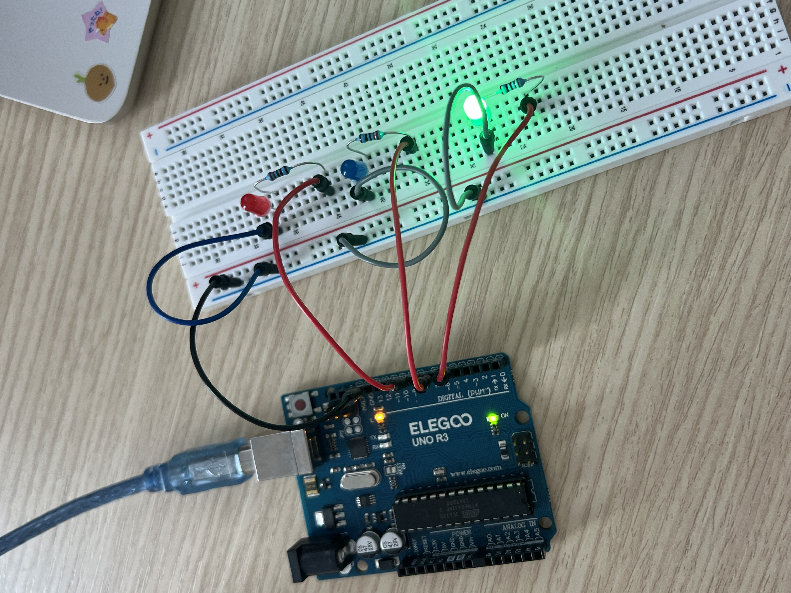
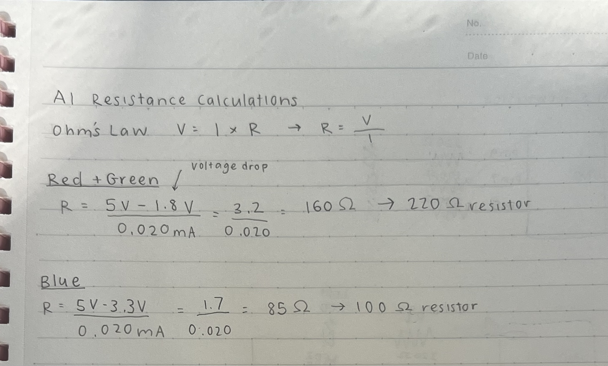
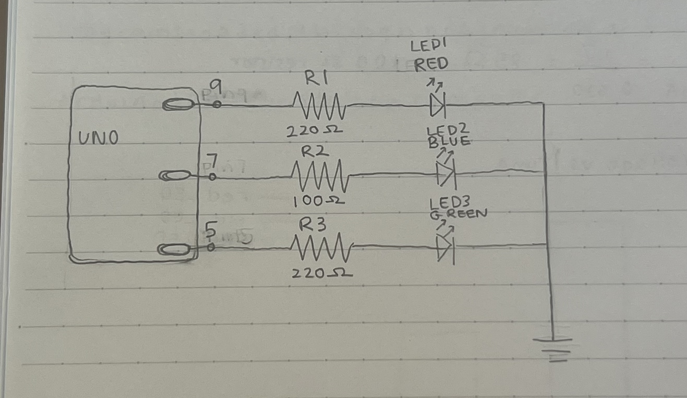
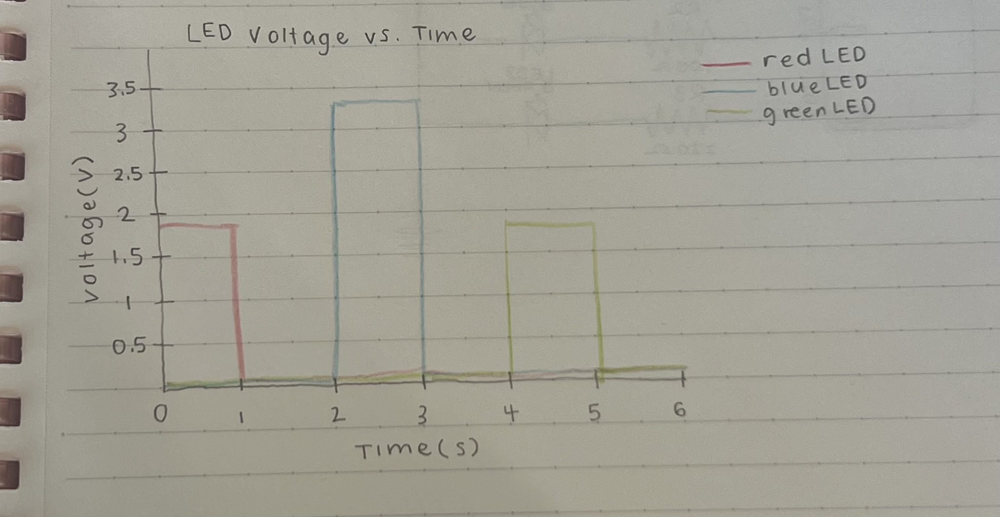

Here is all the documentation for assignment 1.
This is my circuit:
Here are my calculations for the resistors I chose:
This is the schematic I created for my circuit:

// initializing LEDs to ports
int led1 = 9; // red LED to port 9
int led2 = 7; // blue LED to port 7
int led3 = 5; // green LED to port 5
// the setup function runs once when you press reset or power the board
void setup() {
// initialize digital pin LED_BUILTIN as an output.
pinMode(led1, OUTPUT);
pinMode(led2, OUTPUT);
pinMode(led3, OUTPUT);
}
// the loop function runs over and over again forever
void loop() {
digitalWrite(led1, HIGH); // turn the LED on (HIGH is the voltage level)
delay(1000); // wait for a second
digitalWrite(led1, LOW); // turn the LED off by making the voltage LOW
delay(1000); // wait for a second
digitalWrite(led2, HIGH); // turn LED on
delay(1000); // wait for a second
digitalWrite(led2, LOW); // turn LED off
delay(1000); // wait for a second
digitalWrite(led3, HIGH); // turn LED on
delay(1000); // wait for a second
digitalWrite(led3, LOW); // turn LED off
delay(1000); // wait for a second
}
1.
2. The microcontroller has 20 ports, but 20 individual LEDs(~20 mA each) would exceed the 200 mA limit. So, based on that limit, it is safe to blink maximum 10 individual LEDs.
3. I did some research and found that there is a rate called critical flicker fusion frequency (CFF), where flickering light will be percieved as continuous at above 50-90 Hz. According to https://pmc.ncbi.nlm.nih.gov/articles/PMC8537539/
4. In this assignment, I used chatGPT for assistance in formatting my webpage, when I was having issues. For example, one of the issues that I had was that my images would be cut off. I also used it to trouble shoot my issues with pushing to Git, I would use it to help decipher my error messages.